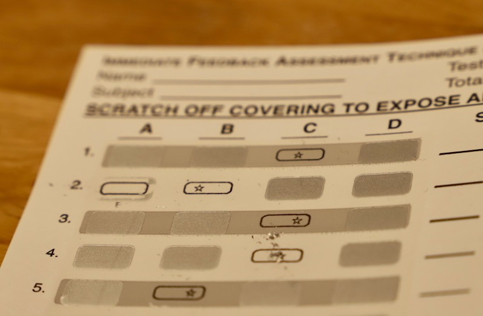

Part of this seminar is a preparation before we meet, so that you get better learning results for yourself, but also that you get a more authentic feeling of a TBL session.
Read at least the section Overview of TBL below.
Optionally, browse through the additional material below.
Overview of TBL
To quickly get an overview of team-based learning, it is easiest to look at its elements at the surface level—focusing on what is happening—before we dive into more details. You will learn about the main elements of team-based learning, how a course is partitioned into units, and how each unit consists of a sequence of learning activities.
The Teams
At the beginning of the semester, the teacher assigns all students to teams of 5 to 7 students. These teams remain constant over the entire semester.
Learning Units
A course is divided into a number of learning units, roughly one unit per week, covering a specific area or topic within the course. For each learning unit, students go through a specific sequence of activities.
Phase 1: Preparation
Students prepare individually, outside of class, using a number of learning activities prepared by the instructor. Examples are book chapters, videos, or any other learning material that is suitable for a first approach to new knowledge.
Phase 2: Readiness Assurance
Students then visit class. What follows is a phase to ensure that students have prepared and that gives them a first opportunity to test their knowledge. This phase is also called Readiness Assurance Test or short RAT, consisting of two tests following immediately each other. Both tests are closed-book, without any helping material. The level of difficulty is moderate. Questions should trigger discussion and not be trivial, but they should not be unreasonably difficult either.
First: Individual Test (i-RAT)
Students first complete an individual test that covers the preparation material. The test consists of around ten multiple-choice questions, and the duration is around 20 minutes. No helping material is allowed.
Second: Team Test (t-RAT)
Students solve the same test once again, but this time as a team. This gives them the opportunity to discuss the correct answer. During this process, it is important that teams have immediately access to the correct answer after they have given theirs. This can be achieved by special scratchcards that reveal the correct answer and also document a team’s choice. As with the individual test, no helping material is allowed.

Instructor Feedback
Since the tests are multiple-choice, it is often easy to immediately gather results and statistics that reveal content that is unclear and deserves repetition. Studentd may also request clarifications or argue if they disagree with answer alternatives in the test. This phase resembles an interactive lecture, ideally not longer than 20 minutes.
Phase 3: Team Application Activities
After the readiness assurance phase, students go through one or more team application activities. The duration depends on the type of activities, and the session may last from 30 minutes to several hours. The activities are designed so that they require the application of the prepared material. The level of difficulty is much higher than that of the previous test, and it is important that the activities address a significant problem. All teams receive the same task.
Once an application activity is complete, the instructor asks the teams for their conclusions. Teams present their results simultaneously, by making a specific choice. An example is to raise a card with a letter A, B, C, or D. The course instructor then uses this feedback to start a discussion about the results. Ideally, teams make different choices. Since all teams worked on the same task, chances are high that they are engaged in the discussion and care about different alternatives and understanding why another team made a different decision.
To summarize the team application activities, the team application activities the 4-S-principles:
All teams receive the same task.
The tasks are significant.
All answers are presented simultaneously.
Answers are specific.
Conclusion
We have now covered all concepts of TBL. That’s all. Of course, we have only talked about what is happening, not why, and left out some details. These are the parts we look into closer in the seminar together.
Optional Preparation
In case you have more time, you can brose through more materials listed below.